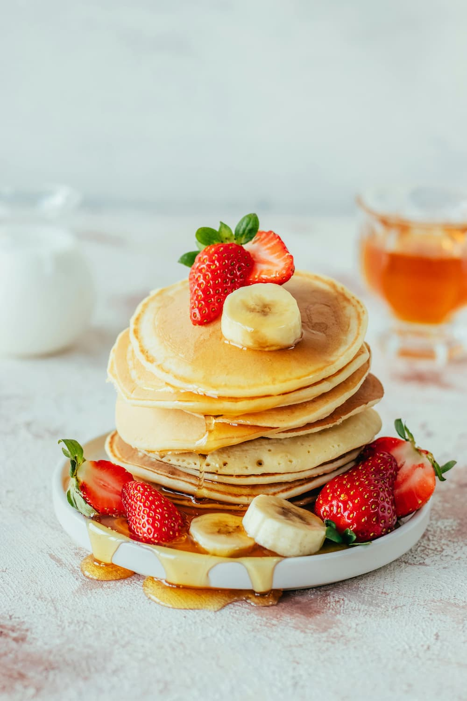

classic-pancakes

Description
These fluffy homemade pancakes are quick, easy, and perfect for breakfast. Serve them with butter, syrup, or fresh berries for a comforting morning treat.
Ingredients
- 1 cup all-purpose flour
- 2 tablespoons sugar
- 1 teaspoon baking powder
- 1/2 teaspoon baking soda
- 1/4 teaspoon salt
- 3/4 cup buttermilk
- 1 large egg
- 2 tablespoons melted butter
- Butter or oil for cooking
Steps
- In a bowl, whisk together flour, sugar, baking powder, baking soda, and salt.
- In another bowl, whisk buttermilk, egg, and melted butter until smooth.
- Pour wet ingredients into dry and mix until just combined (batter should be slightly lumpy).
- Heat a lightly oiled skillet or griddle over medium heat.
- Pour 1/4 cup batter for each pancake; cook until bubbles form on top, then flip and cook until golden.
- Serve warm with butter, syrup, or toppings of your choice.
Home